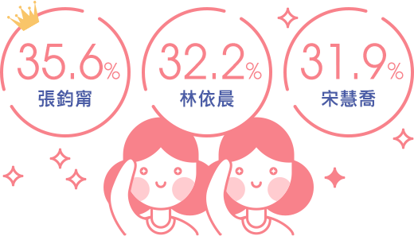
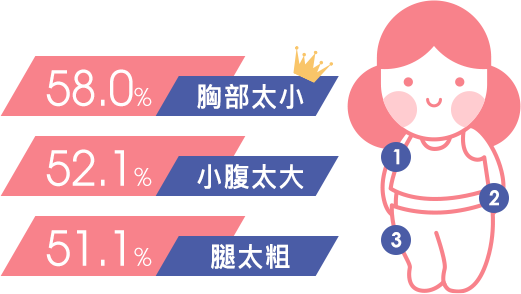
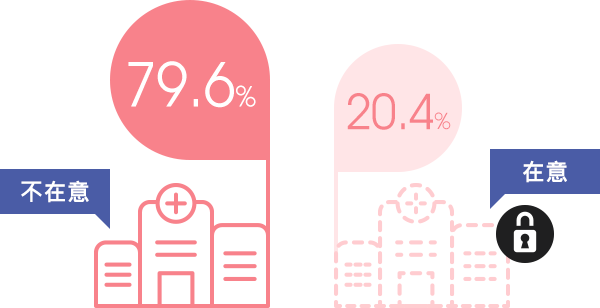

FG調查局 報告編號2017012醫美療程消費行為大調查

氣質美人張鈞甯擊敗眾女星登完美外貌女神寶座！
調查結果發現，入圍前10名完美外貌女神的女星除了擁有讓人稱羨的外貌外，每個人更具有獨特的氣質。因此，擁有完美的外貌，漂亮不是唯一的條件，氣質出眾才是關鍵！
網友心目中的前10名「完美外貌」女神

許瑋甯
30.3%
徐若瑄
27.1%
林志玲
21.5%
Angelababy
18.9%
金泰熙
17.0%
隋棠
14.8%
劉詩詩
14.5%
女孩們最在意的「外貌」問題小胸、腹大、腿粗
高達七成(69.7%)的受訪者對於自己的整體外貌感到不滿意，小胸、腹大、腿粗是多數人最在意的前3名外貌問題。
最在意的前10大外貌問題

手臂太粗
38.8%
屁股太大
37.9%
腰圍過大
35.3%
鼻子不夠挺
34.4%
臉太大
32.2%
屁股不夠翹
26.8%
有雙下巴
23.7%
女孩們最在意的「膚質」問題是毛孔粗大 、粉刺
超過八成(83.9%)的受訪者對於自己的肌膚狀況感到不滿意，台灣的氣候悶熱又潮溼讓不少人的膚質深受毛孔粗大、粉刺的困擾。
最在意的前10大臉部肌膚問題
暗沉
43.2%
臉上有斑
41.0%
細紋/皺紋
39.1%
膚色不勻
36.9%
有痘疤
35.0%
易出油
34.7%
是否想嘗試醫美療程？
NO！花錢又危險
兩成(21.8%)受訪者表示不想嘗試醫美療程，主要原因是怕有後遺症又很花錢！
不想嘗試醫美療程的原因
怕危險
56.5%
怕效果不如預期
50.7%
沒有時間
10.1%
靠化妝就可以改變外貌
7.2%
對自己的膚質及外貌很滿意
4.3%
怕被責備
4.3%
怕輿論壓力
4.3%
是否想嘗試醫美療程？
YES！我要變得更好
近八成(78.2%)的受訪者願意嘗試醫美療程，會想進行微整形的主因是要讓自己變得更好！近六成(56.5%)的受訪者曾做過醫美療程，主要年齡層落在：31~35歲(占13.4%)及36~40歲(占10.9%)。
想接受醫美療程的原因
術後恢復快不怕被發現
24.2%
想要獲得好人緣
23.0%
想要獲得異性緣
11.7%
想變成跟自己的偶像一樣
2.8%
受同儕或親友影響
2.8%
工作上的需求
2.0%
只是愛跟風
2.0%
另一半的要求
0.8%
挑選醫美診所前先搜、看、聽！首重技術、專業度
超過七成的受訪者在選擇醫美診所前都會先參考有眾多網友分享心得的論壇/討論區及透過親友推薦，由此可知真實體驗經驗是選擇醫美診所的重要參考資訊！而醫師的技術及專業度是大家最重視的關鍵點。
影響選擇醫美診所進行療程的資訊來源
部落客文章
43.5%
Facebook
28.7%
電視節目及廣告
16.7%
選擇醫美診所《最在意》的因素
診所評價
67.6%
價格
54.6%
不會強迫推銷
37.0%
服務態度
29.6%
術後諮詢及服務
24.1%
環境設備
19.4%
交通便利
5.6%
做醫美療程的最佳時機是？
不趕時間、有較多時間做術後保養的休假日是多數人選擇做醫學美容的最佳時間。
做醫美療程的時機
下班後
26.9%
平日
24.1%
特別請假
23.1%
中午午休
2.8%
其他
0.9%
最受「青睞」的前10大醫美療程大公開！
毛孔、斑斑點點、暗沉...等肌膚問題讓不少人超困擾，因此最多人嘗試過的醫學美容以能快速改善肌膚問題的療程為主。
進行過醫美療程的前10大問題
粉刺
35.2%
痘痘
27.8%
痣
21.3%
除毛
16.7%
肌膚乾燥
13.9%
無雙眼皮
11.1%
細紋/皺紋
9.3%
最多人嘗試過的前10大醫美療程
杏仁酸
27.8%
脈衝光
21.3%
飛梭雷射
19.4%
雷射除毛
19.4%
肉毒桿菌注射
14.8%
注射美白針
14.8%
玻尿酸注射
9.3%
最「有感」的醫美療程原來是它！
療程短且容易看到效果的淨膚雷射是最多人感到滿意的療程
感到效果滿意的前10名醫美療程
杏仁酸
11.1%
肉毒桿菌注射
8.3%
飛梭雷射
8.3%
果酸換膚
6.5%
脈衝光
6.5%
注射美白針
5.6%
微晶瓷
5.6%
做醫美沒有時間表，有需要立刻GO！
不少人追求隨時讓自己保持在最美好的狀態，因此有超過三成的受訪者表示只要對自己感不滿意時就會去做療程，也有超過一成受訪者每1~2個月會就會去做醫美療程。而每次花費$3000左右是多數人可以接受的預算。
接受醫美療程的頻率
一年以上
27.8%
1~2個月
13.9%
半年以上
13.9%
3~4個月
8.3%
5~6個月
1.9%
每次接受醫美療程的預算
$3,001~$6,000
38.9%
$6,001~$10,000
12.0%
$10,001以上
7.4%
微整型不再是不能說的秘密！推薦他人仍要慎重
近年名人們常在媒體前暢談自身做醫美療程的各種經驗，因此現在去做微整型已不再是不能說的秘密，近八成(79.6%)的受訪者不在意讓別人知道自己曾做過醫美。但做醫學美容還是有一定的風險存在，所以多數人(88.9%)還是不會主動推薦親友進行療程。
是否在意讓別人知道做過醫美療程

是否會推薦親友進行醫美療程
做醫美療程帶來了哪些「正向改變」？
超過八成(85.2%)曾做過醫美療程的受訪者表示，做了醫美後讓自己變得更有自信、開心快樂。難怪有八成的受訪者在經濟許可且安全的狀況下願意嘗試醫美療程。
是否會想嘗試醫美療程

做醫美療程後，最大的「正向改變」
更有人緣
8.3%
沒有任何正向的改變
5.6%
更有異性緣
4.6%
工作更順利
2.8%
與另一半的感情更好
2.8%